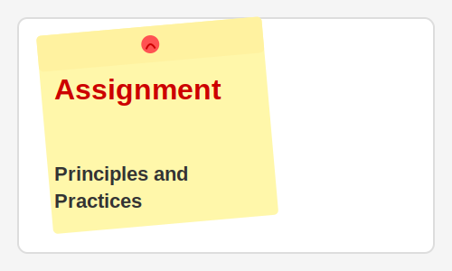

Week 5: Electronics Production
Week 5 focused on electronics production techniques, particularly the fabrication of printed circuit boards (PCBs). This week was especially relevant to my background in Solar R&D at Barefoot College, as it introduced skills for creating custom electronic components and circuits.
Key Learning Outcomes
- Understanding PCB fabrication processes: milling, etching, and soldering
- Learning to operate CNC milling machines for circuit board production
- Developing soldering techniques for through-hole and surface-mount components
- Testing and debugging electronic circuits
- Understanding the production workflow from design to working prototype
Equipment Used
- Roland SRM-20 desktop milling machine for PCB fabrication
- Soldering station with temperature control
- Various electronic components: resistors, capacitors, microcontrollers
- Multimeter and oscilloscope for testing and debugging
Assignment Deliverables
For this assignment, I had to:
- Mill a PCB using the Roland SRM-20
- Solder components onto the board
- Program the board using appropriate software
- Document the production process and any challenges encountered
- Test the board to verify functionality
My Project: Programmer Board
I created an in-circuit programmer board that can be used to program microcontrollers in subsequent weeks. The board serves as a bridge between a computer and other circuit boards, allowing for programming and communication.
Challenges and Solutions
One of the main challenges was achieving the precise milling depth required for the PCB. Too deep, and the traces would be damaged; too shallow, and copper would remain where it shouldn't. I solved this by conducting several tests with different depth settings to find the optimal parameter.
Soldering small components was also challenging initially, but I developed better techniques with practice, including proper heat control and steady hand positioning.
Reflection
Electronics production is a crucial skill for my work in solar technology at Barefoot College. This week's learning has given me the confidence to create custom circuits for specific applications, rather than relying solely on off-the-shelf components.
The hands-on experience with PCB fabrication has deepened my understanding of electronic components and circuitry, which will be valuable for creating the electronics components of my final project.